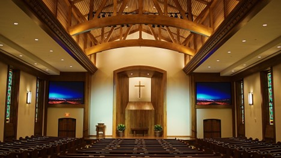

Lone Star Circuits | Creative Director, IT Department
July 29th 2021 – Present
-Created and Managed the Design, Data, and Forms of the Company Website
-Improved our SEO score to be the first result using Google Search
-Established A Google Business Page and Industrynet Page
-Developed a web browser application on a local server that does MRP and ERP functionality
Medix Infusion | Web Developer
December 2020 –January 2021
-Redesigned the Front End of the Pages on the Website
-Adjusted/Created Visual Assets using Affinity Photo for the Site
-Accommodated Margins with Elementor for both a web and mobile view
Preston Road Church of Christ | Freelancer
June 2020 – Present
-Created several graphics and presentations for Services and Announcements
-Modified various video clips for brief exhibition toward events or the Speaker's message
-Produced and Developed the PRCC Virtual Choir during Covid, syncing audio and video for multiple Individuals and Parts
Current Projects

My Long Term Project going forward from this current site design is to make a 3D Portfolio using Three.js.
At this time my effort has been on work and this current Portfolio, but I intend to create a more interactive and unique
Project for my website!
Using Vultr Cloud Hosting on a small Ubuntu server and CyberPanel, an open source software for websites and mail servers,
I am creating a mail server for my domain name, mikedaptable. At this time I have created the server and installed the software.
Currently, emails can be created with the domain name and Imap/Pop3 capabilities work, the only issue is getting my emails out of
the spam box, which I shall try an smtp relay to do that. Once the project is complete, I shall update this site and move it
to Past Projects, but otherwise I will try to keep my progress up to date here.
Past Projects
February 22nd, 2023
Using Basic Geometry for the board and Blender for the Pieces, This Project was made as a proof of concept for using
Raycasting to allow for interaction with objects in the 3d Enviornment. In the video, hovering over the pieces turns it
to a different color/glow and clicking presents the message that the object was clicked, allowing us to replace it with
any script that is needed.
August 4th, 2022

To Send webhooks, I created a small python script that sends a webhook to the url I had specified. To verify I had received it, I made a small separate
python script that creates a blank flask server which will from the command line show me that I had gotten the json content or not. This was a small project
to troubleshoot issues with receiving webhooks.
June 4th, 2022
To turn the data from the Website's online employment form to pdfs, I created a pdf generator script called e-app (electronic application).
Running the file would open a GUI with a dropdown to choose a folder you added with the exported data and then pressing the button would generate the pdfs.
October 12th, 2021
Using treelib, I created a python script that would use recursion to grab all the xml data into lists then added exceptions to clean the values that were empty or null.
This was useful in recreating the xml to another location or transferring the data into some other format to use.
September 8th, 2021

After about five re mediations, the website was published from my first two months working there. Overtime, I have added changes when applicable, some of which being
Company news updates on News You Can Use, an online employment form, and additional showcases of products that can be displayed. Many of the visuals for the site were either
provided or taken/edited by myself. I also managed to get our site to the top of google along with the creation of a google business page when searching "lone star circuits"
June 6th, 2020
For this Project I aligned and edited multiple videos to start at the same point. With the audio there was some variety
So I added reverb to the audio portion of the project to attempt to sync all the singers together for the song.
While I was able to make adjustments to audio in the video editor, I should have used audacity and synced audio there first.
I have used audacity for past Projects/Assignments and its use on creating an audio file would have resulted with less reverb or none
October 23rd, 2019
Published on the Google Play store, this is a free app that is used for recording audio.
During the time, I intended it to be a audio app that does not store the audio but is present to replay with the app still open or in
The background. It is possible to add a firestore or sql table to hold the recordings, however this was intended as a simple free project
December 17th, 2018
This is my first Google Play published project, a basic drawing game to check if you are able to draw straight on your phone.
It is one dollar on the app store in that I wanted to setup my merchant account along with my developer account.
The app also has a seperate page for free doodling both of which are done in java using a canvas.
October 9th, 2018
Displayed at CGDC in Portland, Oregon, Two Other People and Myself Created an obstacle/racing game where you needed to complete the track,
go through all the checkpoints, and avoid having all the bags in the back fly out as you rush your student to school! My Part in the project
was creating the crates,ramps, and the golf cart which was a shorter version of the long golf cart I made for a prior project.
This Project served as a wonderful showcase at the convention and a proof of concept for animating the golf carts in the game enviornment.
February 15th, 2018
Our Class Project on a VR space, I made several 3D Models for the project including the chairs, whiteboard, air vents, and lamps.
This was a part of a bigger project to create our college campus in VR. Most of the Business Building was complete and one Individual
Created the Bible Building. My main contribution was Multiple 3D Models, one of which being the Long Golf Carts on our Campus. With so many
Faces, it was to be used for driving around the enviornment, while this Project ended up incomplete, it did see use in another project as a
Shorter Golf Cart for an obstacle course game. These assets will be displayed under the More section of my Portfolio.
Programming
Python | Flask, Pandas, Tkinter, pyodbc
5 years
Python is considered my primary coding language.
It is the easiest to structure with the least amount of syntax. Unless I need a complied application, its multiple libraries and integration with many different software makes it possible to do almost everything front end and back end related. I have created some of my biggest projects using Flask and SQL that have been a reliable contribution to the individuals and spaces that I have worked with.
HTML | HTML5, CSS, Adobe Dreamweaver, Dash
6 years
Everything with a Webpage uses HTML
I learned alot of HTML early from various computer classes, Adobe Products like Dreamweaver, and Javascript related projects which complements HTML and CSS. It is the easiest to pick up on and either mess with or get templates to mess with from w3schools. With the use of inspect, it makes it easier to find the location of specific elements or issues in a webpage.
Javascript | Node.js, Three.js, Babylon.js, HTML
3 years
It's better than Java.
In conjunction to HTML and Dash, I have been the most active in using Javascript to better enhance my projects beyond basic webpage functionality. In the past I have had projects that have caught my interest in VR spaces in the browser rather than on a headset such as Babylon.js and more recently Three.js. If it was not apparent already I really enjoy using and creating environments with Three.js. It is the perfect blend of visual and programming where the results can be seen and interacted with. You can view this best in my Checkers Board Project!
Java | Android Studio, JCreator, JDK
4 years
This was my very first coding language
I started off with Java in high school but got the most out of Java when I started making mobile apps on Android Studio. When Publishing to the Google Play Store, creating a JDK package with a signature has been the way for me to publish any additional apps on my Google Developer Account.
C# | Unity, Visual Studios, Windows Forms
3 months
Something needs to compile my projects.
My earliest work in C# was basic animations and actions for objects on Unity such as shooting a projectile, creating collision, or adding movement. I now am learning C# to be able to create applications with executables rather than running batch files with a cmd line in the background. I plan to do some future projects/ side hustles using Windows Forms or WPF for creating Desktop and Online executable GUIs.
Design
Graphic Design | Affinity Photo, Photoshop
8 years
Affinity Photo like Photoshop can do it all!
Going into a technology related field, being able to see results was a priority which is what lead me to doing photo editing and 3d modeling first before programming. Between making adjustments to photos and creating 2d/3d Textures for models or on their own, I have used Photoshop for a long time. I currently use Affinity Photo which is able to do the same things if not more.
Video Editing | DaVinci Resolve, Premiere Pro, iMovie, Camtasia
6 years
Screen, Clipping, Export!
Creating videos is always a blast whether it is creating a new video from shot assets or making adjustments to existing projects either from camera or OBS. DaVinci Resolve is my favorite and current video editor that is similar to Premiere Pro. Along with mutliple video/audio tracks, I have been able to do audio mixing and background removal in Resolve as well for projects such as the Virtual Choir.
3D Modeling | Blender
4 years
Always delete the Default Square to make a new one.
From College, I have also used Maya as well, but I prefer Blender and in many different facets is much more doable despite the shortcut learning curve. I have made many different 3D Models and for most projects was the role I took on. It has allowed for more visual options with perspective and depth to be used in my work.
Vector Graphics | Affinity Designer
5 months
We Can have nice things!
While I still continue to use raster graphics (png,jpg) for the most part in my projects, I have been slowly transitioning or at least having versions of assets as vectors. Many of the assets I had were intended for web design which made it difficult to use properly in print, so I had traced over the logo using Affinity Designer to create a vector version that can be good for print. I am also able to add raster elements to a vector which provides more detailing and depth without changing the svg to a png or jpg.
Education
Diploma | Plano Senior High School 2015
In 2015, I graduated with one of the biggest classes that Plano Senior ever had with a GPA of 3.5 and was part of the Marching Band as a Mellophone/Marching Horn player. Aside from required courses, my interest was split between computer courses and business classes going over basics on micro and macroeconomics. Overall I enjoyed Plano Senior and still have great memories on excellent marching shows, trips, and class projects.
Bachelor of Science | Abilene Christian University 2019
From ACU I graduated with a Bachelor of Science Majoring in Digital Entertainment Technology; a blend between Art and Computer Science based on the Gaming, Film, and Animation Industries. Additionally, I have a minor in Business Administration and an unofficial minor in UX/UI from multiple courses on HCI (Human Computer Interface). Once again I was in the Big Purple Marching Band playing the Marching and Concert Horn. My most enjoyable experience in ACU was a One Month Study Abroad in Oxford where I took classes in Lessons of the Old Testament and History of Computer Science; visiting sites such as Bletchley Park, Salisbury Church, and Stone Henge.
Events
CGDC Christian Game Developers Conference | July 18th, 2018
With a few colleagues and professor in our DET Program, we attended the Christian Game Developers Conference in Portland, Oregon. For a few days we collaborated with others in the same field, showcased the work in stead of our university, and listened to various lectures and success stories of how technology is being integrated and refined to Christian media as a whole.
Asset Showcase
3D Models | Blender
2D Textures | Photoshop, Substance Painter


UX/UI Layouts | Adobe XD
Digital Stewardship
My work is about constructing functional and professional works of art in the digital space, from created and developed web or desktop software for the workspace to hands on side projects such as GUIs, Graphics, Video Productions, or websites.
The tasks I have done for companies,clients,or friends are commited to a deductive understanding of their goals and an adherence to the growth of a business's personal wealth.
Skill Hightlights
8 years
6 years
5 years
6 years
4 years